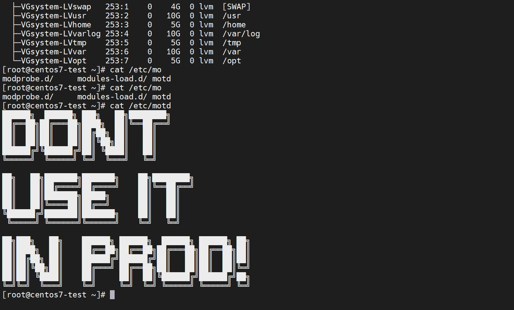

使用packer构建自定义镜像
虚拟化工具链介绍：
KVM：Linux内核态的虚拟化组件。QEMU：Linux用户态的虚拟化组件。QEMU跟KVM结合提供完整的虚拟化技术支撑，属于架构的最底层。Libvirt：介于架构底层和架构上层之间，它将底层的虚拟化特性抽象成统一的API（应用程序编程接口），从而提供给上层调用。Packer和Vagrant：虚拟化客户端工具，它们属于架构的最上层，直接跟终端用户交互。同时，在客户端之间也会产生相应联系，我们将Packer的输出物作为Vagrant的输入源。
packer
首先是安装
packer，去官网下载二进制文件就可以：1
2[root@opsmanager packer-centos7-kvm-example]# packer -v
1.7.4开启自动完成的功能：
1
[root@opsmanager packer-centos7-kvm-example]# packer -autocomplete-install
packer流程：Packer使用作为json文件的模板将配置携带到各种任务中。 核心任务是Build。 在此阶段，Packer正在使用Builders为单个平台创建机器映像。 例如。Qemu Builder创建一个kvm / xen虚拟机映像。 下一阶段是配置。 在此任务中， 预配器 （如ansible或shell脚本）在计算机映像内执行任务。 完成后， 后处理器将处理最终任务。 例如压缩虚拟映像或将其导入特定的应用程序。packer模板：一个json template file包含：builders(必需)description(可选)variables(可选)min_packer_version(可选)provisioners(可选)post-processors(可选)
构建
检查环境：
无论是物理机还是虚拟机开启
intel硬件虚拟化支持：1
2
3
4
5验证内核模块是否加载
[root@opsmanager qume-demo]# lsmod | grep kvm
kvm_intel 188740 0
kvm 637289 1 kvm_intel
irqbypass 13503 1 kvm开启嵌套虚拟化加快构建速度：
1
2
3
4
5
6
7
8
9
10
11
12
13
14Y 表示已开启， N 表示未开启，本机已开启
[root@opsmanager qume-demo]# cat /sys/module/kvm_intel/parameters/nested
Y
开启方法
1 创建文件
[root@opsmanager qume-demo]# cat /etc/modprobe.d/kvm-nested.conf
options kvm-intel nested=1
options kvm-intel enable_shadow_vmcs=1
options kvm-intel enable_apicv=1
options kvm-intel ept=1
2 重载内核模块
modprobe -r kvm_intel
modprobe -a kvm_intel安装
qume-kvm：1
2在 epel 源
yum install qume-kvm -y测试脚本：
1
2
3
4
5[root@opsmanager stardata-install]# cat install.sh
!/bin/bash
echo "This is a basic example of a shell provisioner."
yum -y install screen vim创建一个
ansible role测试：1
2
3
4
5
6
7
8
9
10
11
12
13
14
15
16
17
18
19
20
21
22
23
24
25
26
27
28
29
30
31
32
33[root@opsmanager packer-centos7-kvm-example]# ansible-galaxy init test
- Role test was created successfully
# 创建一个测试任务
[root@opsmanager tasks]# cat main.yml
---
# tasks file for test
- name: Add banner strings
blockinfile:
path: /etc/motd
create: yes
block: |
██████╗ ██████╗ ███╗ ██╗████████╗
██╔══██╗██╔═══██╗████╗ ██║╚══██╔══╝
██║ ██║██║ ██║██╔██╗ ██║ ██║
██║ ██║██║ ██║██║╚██╗██║ ██║
██████╔╝╚██████╔╝██║ ╚████║ ██║
╚═════╝ ╚═════╝ ╚═╝ ╚═══╝ ╚═╝
██╗ ██╗███████╗███████╗ ██╗████████╗
██║ ██║██╔════╝██╔════╝ ██║╚══██╔══╝
██║ ██║███████╗█████╗ ██║ ██║
██║ ██║╚════██║██╔══╝ ██║ ██║
╚██████╔╝███████║███████╗ ██║ ██║
╚═════╝ ╚══════╝╚══════╝ ╚═╝ ╚═╝
██╗███╗ ██╗ ██████╗ ██████╗ ██████╗ ██████╗ ██╗
██║████╗ ██║ ██╔══██╗██╔══██╗██╔═══██╗██╔══██╗██║
██║██╔██╗ ██║ ██████╔╝██████╔╝██║ ██║██║ ██║██║
██║██║╚██╗██║ ██╔═══╝ ██╔══██╗██║ ██║██║ ██║╚═╝
██║██║ ╚████║ ██║ ██║ ██║╚██████╔╝██████╔╝██╗
╚═╝╚═╝ ╚═══╝ ╚═╝ ╚═╝ ╚═╝ ╚═════╝ ╚═════╝ ╚═╝
packer的模板：模板文件：
1
2
3
4
5
6
7
8
9
10
11
12
13
14
15
16
17
18
19
20
21
22
23
24
25
26
27
28
29
30
31
32
33
34
35
36
37
38
39
40
41
42
43
44
45
46
47
48
49
50
51
52
53
54
55
56
57
58
59
60
61
62
63
64
65
66
67
68
69
70
71
72
73
74
75
76
77
78
79
80
81
82
83
84
85
86
87
88
89
90
91
92
93{
"variables": {
"ram": "2048",
"major_version": "7",
"minor_version": "9",
"revision_version": "2009",
"centos_version": "{{user `major_version`}}.{{user `minor_version`}}",
"name_template": "centos-{{user `centos_version`}}-amd64",
"disk_size": "100000",
"vm_name": "centos7-base",
"iso_url": "../qume/CentOS-7-x86_64-Minimal-2009.iso",
"iso_checksum": "07b94e6b1a0b0260b94c83d6bb76b26bf7a310dc78d7a9c7432809fb9bc6194a",
"config_file": "c7-kvm-ks.cfg",
"playbook_name": "test.yml",
"ssh_username": "root",
"ssh_password": "TestTest"
},
"builders": [
{
"type": "qemu",
"accelerator": "kvm",
"qemu_binary": "/usr/libexec/qemu-kvm",
"headless": true,
"qemuargs": [
[
"-m",
"{{user `ram`}}M"
],
[
"-smp",
"cpus=1,maxcpus=16,cores=4"
]
],
"disk_interface": "virtio",
"disk_size": "{{user `disk_size`}}",
"format": "qcow2",
"net_device": "virtio-net",
"iso_url": "{{user `iso_url`}}",
"iso_checksum": "{{user `iso_checksum`}}",
"vm_name": "{{user `vm_name`}}",
"output_directory": "builds/packer-{{user `name_template`}}",
"http_directory": "./docroot",
"http_port_min": 10082,
"http_port_max": 10089,
"host_port_min": 2222,
"host_port_max": 2229,
"ssh_username": "{{user `ssh_username`}}",
"ssh_password": "{{user `ssh_password`}}",
"ssh_port": 22,
"ssh_wait_timeout": "3600s",
"boot_wait": "40s",
"boot_command": [
"<up><wait><tab><wait> text",
"ks=http://{{ .HTTPIP }}:{{ .HTTPPort }}/{{user `config_file`}}",
"<enter><wait>"
],
"shutdown_command": "shutdown -P now"
}
],
"provisioners": [
{
"type": "shell-local",
"command": "tar zcf stardata-install.tar.gz stardata-install/"
},
{
"type": "file",
"source": "stardata-install.tar.gz",
"destination": "/root/stardata-install.tar.gz"
},
{
"type": "shell",
"pause_before": "5s",
"inline": [
"cd /root/",
"tar zxf stardata-install.tar.gz",
"cd stardata-install/",
"./install.sh",
"yum clean all"
]
},
{
"type": "ansible",
"playbook_file": "./test/tests/{{ user `playbook_name` }}"
}
],
"post-processors": [
{
"type": "vagrant",
"keep_input_artifact": true,
"output": "builds/{{user `name_template`}}-{{.Provider}}.box"
}
]
}说明：
"headless": true，未安装GUI情况下，需要设置；"qemu_binary": "/usr/libexec/qemu-kvm"，指定二进制文件目录，默认是旧版本qume-kvm的路径；"ssh_wait_timeout": "3600s",ssh超时时间设置大一些；- 基础镜像下载到本地，防止网络不稳定；
ks文件可以通过网络远程获取，也可本地起一个http服务，示例中采用了这种方式；- 最后生成
vagrant的镜像格式；
kickstart文件：1
2
3
4
5
6
7
8
9
10
11
12
13
14
15
16
17
18
19
20
21
22
23
24
25
26
27
28
29
30
31
32
33
34
35
36
37
38
39
40
41
42
43
44
45
46
47
48
49
50
51
52
53
54
55
56
57
58
59
60
61
62
63
64
65
66
67
68
69
70
71
72
73
74
75
76
77
78
79
80
81
82
83
84
85
86
87
88
89
90
91
92
93
94
95
96
97
98
99
100
101
102
103
104
105
106
107
108
109
110
111
112
113
114
115
116
117
118
119
120
121
122
123
124[root@opsmanager docroot]# cat c7-kvm-ks.cfg
reference: https://access.redhat.com/documentation/en-US/Red_Hat_Enterprise_Linux/7/html/Installation_Guide/sect-kickstart-syntax.html
based on one of our production installs with some modifications
and some integrations from https://raw.githubusercontent.com/geerlingguy/packer-centos-7/master/http/ks.cfg
Run the installer
install
Use CDROM installation media
cdrom
System language
lang en_US.UTF-8
Keyboard layouts
keyboard us
Enable more hardware support
unsupported_hardware
Network information
network --bootproto=dhcp --hostname=centos7-test.stardata.lan
System authorization information
auth --enableshadow --passalgo=sha512
Root password
rootpw CHANGEME
Selinux in permissive mode (will be disabled by provisioners)
selinux --permissive
System timezone
timezone UTC
System bootloader configuration
bootloader --append=" crashkernel=auto" --location=mbr --boot-drive=vda
Run the text install
text
Skip X config
skipx
Only use /dev/vda
ignoredisk --only-use=vda
Overwrite the MBR
zerombr
Partition clearing information
clearpart --none --initlabel
Disk partitioning information
part pv.305 --fstype="lvmpv" --ondisk=vda --size=98000
part /boot --fstype="ext4" --ondisk=vda --size=1024 --label=BOOT
volgroup VGsystem --pesize=4096 pv.305
logvol /opt --fstype="ext4" --size=5120 --name=LVopt --vgname=VGsystem
logvol /usr --fstype="ext4" --size=10240 --name=LVusr --vgname=VGsystem
logvol /var --fstype="ext4" --size=10240 --name=LVvar --vgname=VGsystem
logvol swap --fstype="swap" --size=4096 --name=LVswap --vgname=VGsystem
logvol / --fstype="ext4" --size=10240 --label="ROOT" --name=LVroot --vgname=VGsystem
logvol /tmp --fstype="ext4" --size=5120 --name=LVtmp --vgname=VGsystem
logvol /var/log --fstype="ext4" --size=10240 --name=LVvarlog --vgname=VGsystem
logvol /home --fstype="ext4" --size=5120 --name=LVhome --vgname=VGsystem
Do not run the Setup Agent on first boot
firstboot --disabled
Accept the EULA
eula --agreed
System services
services --disabled="chronyd" --enabled="sshd"
Reboot the system when the install is complete
reboot
Packages
packages --ignoremissing --excludedocs
@^minimal
@core
kexec-tools
unnecessary firmware
-aic94xx-firmware
-atmel-firmware
-b43-openfwwf
-bfa-firmware
-ipw2100-firmware
-ipw2200-firmware
-ivtv-firmware
-iwl100-firmware
-iwl1000-firmware
-iwl3945-firmware
-iwl4965-firmware
-iwl5000-firmware
-iwl5150-firmware
-iwl6000-firmware
-iwl6000g2a-firmware
-iwl6050-firmware
-libertas-usb8388-firmware
-ql2100-firmware
-ql2200-firmware
-ql23xx-firmware
-ql2400-firmware
-ql2500-firmware
-rt61pci-firmware
-rt73usb-firmware
-xorg-x11-drv-ati-firmware
-zd1211-firmware
end
addon com_redhat_kdump --enable --reserve-mb='auto'
end
post
yum -y upgrade
yum clean all
end
测试脚本：
1
2
3
4
5[root@opsmanager stardata-install]# cat install.sh
!/bin/bash
echo "This is a basic example of a shell provisioner."
yum -y install screen vimansbible和ansible-local的区别：ansible需要宿主机安装ansbible，通过"communicator": "ssh"来进行执行；ansible-local则是在构建的镜像当中执行，将文件同步到镜像当中后执行，需要提前安装好ansible，不需要ssh，可通过shell先安装；
验证模板：
1
[root@opsmanager packer-centos7-kvm-example]# packer validate centos7-base.json
构建：
1
2
3
4
5
6
7
8
9export PACKER_LOG=1 可以打开debug日志
[root@opsmanager qume-demo]# packer build centos7.json
2021/11/01 19:55:24 [INFO] Packer version: 1.7.4 [go1.16.6 linux amd64]
2021/11/01 19:55:24 [TRACE] discovering plugins in /usr/local/bin
2021/11/01 19:55:24 [TRACE] discovering plugins in /root/.packer.d/plugins
2021/11/01 19:55:24 [TRACE] discovering plugins in .
2021/11/01 19:55:24 [INFO] PACKER_CONFIG env var not set; checking the default config file path
2021/11/01 19:55:24 [INFO] PACKER_CONFIG env var set; attempting to open config file: /root/.packerc onfig
...
验证镜像：
kvm和libvirt和vagrant安装使用本篇不做赘述，特别提示vagrant需要安装libvirt-devel；创建一个
存储池：1
2
3
4
5
6
7
8
9
10
11
12
13
14
15
16[root@opsmanager packer-centos7-kvm-example]# virsh pool-define-as test-packer --type dir --target /root/kvm-image/packer-centos7-kvm-example/images
定义池 test-packer
[root@opsmanager packer-centos7-kvm-example]# virsh pool-start test-packer
池 test-packer 已启动
[root@opsmanager packer-centos7-kvm-example]# virsh pool-autostart test-packer
池 test-packer 标记为自动启动
[root@opsmanager packer-centos7-kvm-example]# virsh pool list --all
错误：未知的命令：'pool'
[root@opsmanager packer-centos7-kvm-example]# virsh pool-list --all
名称 状态 自动开始
-------------------------------------------
default 活动 否
test-packer 活动 是将镜像导入
vagrant：1
2
3
4
5
6
7
8
9
10
11
12
13
14
15
16
17
18
19
20
21
22
23
24
25
26[root@opsmanager PackerCentos7]# cat metadata.json
{
"name": "Linux/PackerCentOS7",
"versions": [{
"version": "2020.01",
"providers": [{
"name": "libvirt",
"url": "./centos-7.9-amd64-libvirt.box"
}]
}]
}
由于之前已导入所以报错了，正常会成功
[root@opsmanager PackerCentos7]# vagrant box add metadata.json
==> vagrant: A new version of Vagrant is available: 2.2.18 (installed version: 2.2.13)!
==> vagrant: To upgrade visit: https://www.vagrantup.com/downloads.html
==> box: Loading metadata for box 'metadata.json'
box: URL: file:///root/vagrantbox/PackerCentos7/metadata.json
==> box: Adding box 'Linux/PackerCentOS7' (v2020.01) for provider: libvirt
The box you're attempting to add already exists. Remove it before
adding it again or add it with the `--force` flag.
Name: Linux/PackerCentOS7
Provider: libvirt
Version: 2020.01初始化
vagrantfile，并修改：1
2
3
4
5
6
7
8
9
10
11
12
13
14
15
16
17
18[root@opsmanager testbox]# vagrant init
A `Vagrantfile` has been placed in this directory. You are now
ready to `vagrant up` your first virtual environment! Please read
the comments in the Vagrantfile as well as documentation on
`vagrantup.com` for more information on using Vagrant.
修改 provider 位 libvirt
修改 ssh 账号设置
[root@opsmanager testbox]# cat Vagrantfile | grep -v '#'
Vagrant.configure("2") do |config|
config.vm.box = "Linux/PackerCentOS7"
config.ssh.insert_key = false
config.ssh.password = "CHANGEME"
config.ssh.username = "root"
config.vm.provider "libvirt" do |libvirt|
libvirt.storage_pool_name = "test-packer"
end
end启动虚机：
1
2
3
4
5
6
7
8
9
10
11
12
13
14
15
16
17
18
19
20
21
22
23
24
25
26
27
28
29
30
31
32
33
34
35
36
37
38
39
40
41
42
43
44
45
46[root@opsmanager testbox]# vagrant up
Bringing machine 'default' up with 'libvirt' provider...
==> default: Checking if box 'Linux/PackerCentOS7' version '2020.01' is up to date...
==> default: Creating image (snapshot of base box volume).
==> default: Creating domain with the following settings...
==> default: -- Name: testbox_default
==> default: -- Description: Source: /root/testbox/Vagrantfile
==> default: -- Domain type: kvm
==> default: -- Cpus: 1
==> default: -- Feature: acpi
==> default: -- Feature: apic
==> default: -- Feature: pae
==> default: -- Clock offset: utc
==> default: -- Memory: 512M
==> default: -- Management MAC:
==> default: -- Loader:
==> default: -- Nvram:
==> default: -- Base box: Linux/PackerCentOS7
==> default: -- Storage pool: test-packer
==> default: -- Image(): /home/packer-centos7-kvm-example/images/testbox_default.img, 98G
==> default: -- Disk driver opts: cache='default'
==> default: -- Kernel:
==> default: -- Initrd:
==> default: -- Graphics Type: vnc
==> default: -- Graphics Port: -1
==> default: -- Graphics IP: 127.0.0.1
==> default: -- Graphics Password: Not defined
==> default: -- Video Type: cirrus
==> default: -- Video VRAM: 9216
==> default: -- Sound Type:
==> default: -- Keymap: en-us
==> default: -- TPM Backend: passthrough
==> default: -- TPM Path:
==> default: -- INPUT: type=mouse, bus=ps2
==> default: Creating shared folders metadata...
==> default: Starting domain.
==> default: Waiting for domain to get an IP address...
==> default: Waiting for machine to boot. This may take a few minutes...
default: SSH address: 192.168.121.225:22
default: SSH username: root
default: SSH auth method: password
==> default: Machine booted and ready!
==> default: Installing NFS client...
==> default: Exporting NFS shared folders...
==> default: Preparing to edit /etc/exports. Administrator privileges will be required...
==> default: Mounting NFS shared folders...进入虚机查看：
1
2
3
4
5
6
7
8
9
10
11
12
13
14
15
16
17
18
19
20
21
22
23
24
25
26
27
28
29
30
31
32
33
34
35
36
37
38
39
40
41
42
43
44
45
46
47磁盘分区符合我们定制的 ks 文件
[root@opsmanager testbox]# vagrant ssh
==> default: The machine you're attempting to SSH into is configured to use
==> default: password-based authentication. Vagrant can't script entering the
==> default: password for you. If you're prompted for a password, please enter
==> default: the same password you have configured in the Vagrantfile.
root@192.168.121.225's password:
Last login: Thu Nov 4 11:02:37 2021 from gateway
[root@centos7-test ~]# lsblk
NAME MAJ:MIN RM SIZE RO TYPE MOUNTPOINT
vda 252:0 0 98G 0 disk
├─vda1 252:1 0 1G 0 part /boot
└─vda2 252:2 0 95.7G 0 part
├─VGsystem-LVroot 253:0 0 10G 0 lvm /
├─VGsystem-LVswap 253:1 0 4G 0 lvm [SWAP]
├─VGsystem-LVusr 253:2 0 10G 0 lvm /usr
├─VGsystem-LVhome 253:3 0 5G 0 lvm /home
├─VGsystem-LVvarlog 253:4 0 10G 0 lvm /var/log
├─VGsystem-LVtmp 253:5 0 5G 0 lvm /tmp
├─VGsystem-LVvar 253:6 0 10G 0 lvm /var
└─VGsystem-LVopt 253:7 0 5G 0 lvm /opt
验证ansbile
[root@centos7-test ~]# cat /etc/motd
██████╗ ██████╗ ███╗ ██╗████████╗
██╔══██╗██╔═══██╗████╗ ██║╚══██╔══╝
██║ ██║██║ ██║██╔██╗ ██║ ██║
██║ ██║██║ ██║██║╚██╗██║ ██║
██████╔╝╚██████╔╝██║ ╚████║ ██║
╚═════╝ ╚═════╝ ╚═╝ ╚═══╝ ╚═╝
██╗ ██╗███████╗███████╗ ██╗████████╗
██║ ██║██╔════╝██╔════╝ ██║╚══██╔══╝
██║ ██║███████╗█████╗ ██║ ██║
██║ ██║╚════██║██╔══╝ ██║ ██║
╚██████╔╝███████║███████╗ ██║ ██║
╚═════╝ ╚══════╝╚══════╝ ╚═╝ ╚═╝
██╗███╗ ██╗ ██████╗ ██████╗ ██████╗ ██████╗ ██╗
██║████╗ ██║ ██╔══██╗██╔══██╗██╔═══██╗██╔══██╗██║
██║██╔██╗ ██║ ██████╔╝██████╔╝██║ ██║██║ ██║██║
██║██║╚██╗██║ ██╔═══╝ ██╔══██╗██║ ██║██║ ██║╚═╝
██║██║ ╚████║ ██║ ██║ ██║╚██████╔╝██████╔╝██╗
╚═╝╚═╝ ╚═══╝ ╚═╝ ╚═╝ ╚═╝ ╚═════╝ ╚═════╝ ╚═╝
[root@opsmanager testbox]# vagrant halt
==> default: Attempting graceful shutdown of VM...